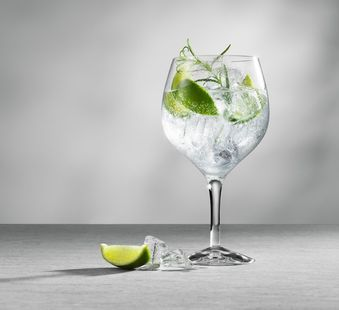

Gin Tonic

The one and only GT
One of the most iconic drinks known to man, and it's so simple!
Ingredients
- 4 cubes of ice
- 2 (or more) fluid ounces of gin
- 4 fluid ounces of tonic water
- 1 tablespoon of fresh lime juice
- 1 lime wedge
Steps
- Take out your glass and a bottle of gin
- Throw the ice cubes into the glass
- Pour in the gin
- Toss in the lime juice
- Mix it up!
- Put in the lime wedge
- Enjoy!
- Make another.. and another..
Back to home page